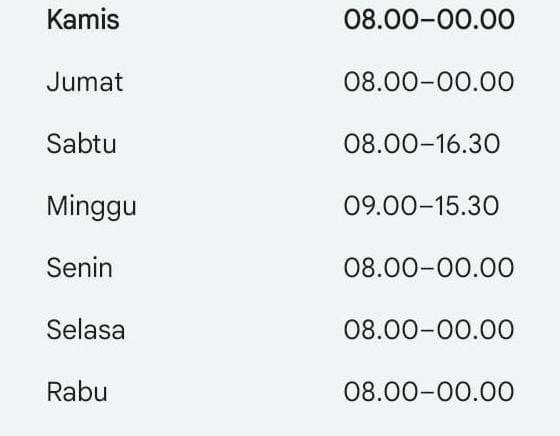

Jam Buka Lion Parcel Cicalengka: Jadwal Operasional dan Lokasi Agen

Sedang mencari informasi jam buka Lion Parcel Cicalengka sebelum mengirim paket? Mengetahui jadwal operasional agen ekspedisi penting agar Anda bisa mengatur waktu perjalanan dan menghindari datang ketika layanan sedang tutup.
Bagi masyarakat Cicalengka, Rancaekek, Nanjungmekar, dan sekitarnya, Lion Parcel Bandung POS101 menyediakan layanan pengiriman paket dan dokumen. Pelanggan dapat menghubungi agen untuk menanyakan layanan pengiriman, biaya ongkir, serta persyaratan paket sebelum datang langsung.
Berikut informasi jam operasional, alamat, dan cara menghubungi Lion Parcel Bandung POS101 yang melayani pelanggan dari wilayah Cicalengka dan sekitarnya.
Butuh Informasi Jam Buka Lion Parcel?
Ingin memastikan agen sedang buka atau menanyakan layanan pengiriman? Hubungi Lion Parcel Bandung POS101 melalui WhatsApp sebelum berkunjung.
💬 Chat WhatsApp 0851-8309-0486Jam Buka Lion Parcel Cicalengka dan Sekitarnya
Berdasarkan informasi operasional yang tercantum pada website Lion Parcel Bandung POS101, jadwal layanan agen Nanjungmekar Rancaekek adalah sebagai berikut:
- Senin: 08.00–20.00 WIB.
- Selasa: 08.00–20.00 WIB.
- Rabu: 08.00–20.00 WIB.
- Kamis: 08.00–20.00 WIB.
- Jumat: 08.00–20.00 WIB.
- Sabtu: 08.00–20.00 WIB.
- Minggu: 08.00–20.00 WIB.
Jadwal tersebut mengacu pada informasi Lion Parcel Bandung POS101 Nanjungmekar Rancaekek. Jam operasional dapat berubah pada hari libur nasional atau karena kondisi operasional tertentu. Sebaiknya konfirmasi terlebih dahulu melalui WhatsApp sebelum datang.
📍 Lokasi Lion Parcel Bandung POS101 Nanjungmekar
Agen beralamat di Jalan Raya Barat Cicalengka RT 1 RW 1, Nanjung Mekar, Rancaekek, Kabupaten Bandung, Jawa Barat. Lihat petunjuk arah melalui Google Maps sebelum berkunjung.
Apakah Lion Parcel Cicalengka Buka pada Hari Minggu?
Pelanggan yang ingin mengirim paket pada akhir pekan sebaiknya memeriksa jadwal agen yang akan dikunjungi. Berdasarkan informasi pada website Lion Parcel Bandung POS101, jam operasional yang tercantum berlaku Senin sampai Minggu, mulai pukul 08.00 hingga 20.00 WIB.
Namun, perlu diperhatikan bahwa setiap agen Lion Parcel memiliki lokasi dan kemungkinan jadwal operasional yang berbeda. Jika Anda mencari agen yang berada tepat di pusat Kecamatan Cicalengka, pastikan alamat dan jam bukanya sesuai dengan lokasi yang dituju.
Untuk menghindari perjalanan yang sia-sia, hubungi agen terlebih dahulu, terutama saat akhir pekan, hari libur nasional, atau ketika Anda ingin mengirim paket mendekati waktu tutup.
Layanan Pengiriman Paket Lion Parcel
Selain mencari jam buka, pelanggan biasanya membutuhkan informasi mengenai layanan pengiriman yang tersedia. Lion Parcel Bandung POS101 melayani kebutuhan pengiriman paket dan dokumen untuk pelanggan pribadi maupun bisnis.
- Pengiriman paket: Untuk kebutuhan pengiriman barang sesuai ketentuan layanan yang tersedia.
- Pengiriman dokumen: Untuk dokumen yang memenuhi persyaratan pengiriman.
- Pengiriman dalam negeri: Tanyakan pilihan layanan dan tarif untuk kota tujuan Anda.
- Pengiriman internasional: Konfirmasikan negara tujuan, jenis barang, dokumen, dan ketersediaan layanan terlebih dahulu.
- Informasi jemput paket: Hubungi agen untuk menanyakan ketersediaan layanan penjemputan sesuai lokasi Anda.
Jenis layanan, tarif, estimasi waktu pengiriman, dan persyaratan barang mengikuti ketentuan yang berlaku. Hubungi agen untuk memperoleh informasi yang sesuai dengan kebutuhan paket Anda.
Tips Sebelum Datang ke Agen Lion Parcel
Agar proses pengiriman lebih praktis, ada beberapa hal yang sebaiknya dipersiapkan sebelum datang ke agen.
- Siapkan alamat penerima: Pastikan nama, alamat lengkap, kode pos, dan nomor telepon penerima sudah benar.
- Kemas paket dengan baik: Gunakan kemasan yang sesuai dengan jenis barang yang akan dikirim.
- Ketahui berat dan ukuran paket: Informasi ini membantu proses pemeriksaan ongkir.
- Pastikan barang dapat dikirim: Tanyakan ketentuan untuk barang yang memiliki pembatasan khusus.
- Konfirmasi jam operasional: Hubungi agen sebelum berangkat, khususnya jika perjalanan Anda cukup jauh.
Lion Parcel untuk Pelanggan Cicalengka dan Rancaekek
Pelanggan dari Cicalengka tidak harus mencari informasi pengiriman hanya ketika sudah berada di depan agen. Anda dapat menghubungi Lion Parcel Bandung POS101 Nanjungmekar Rancaekek terlebih dahulu untuk menanyakan jam buka, tarif, layanan pengiriman, dan persyaratan paket.
Lokasi agen berada di kawasan Jalan Raya Barat Cicalengka, Nanjung Mekar, Rancaekek, Kabupaten Bandung. Sebelum berkunjung, gunakan Google Maps untuk memeriksa rute dan pastikan lokasi tersebut sesuai dengan tujuan Anda.
Untuk kebutuhan pengiriman rutin, toko online, UMKM, maupun perusahaan, Anda juga dapat menanyakan pilihan layanan yang sesuai dengan jumlah, ukuran, dan tujuan paket.
Kesimpulan
Informasi jam buka Lion Parcel penting bagi pelanggan yang ingin mengirim paket dari Cicalengka dan wilayah sekitarnya. Website Lion Parcel Bandung POS101 mencantumkan jam operasional Senin sampai Minggu, pukul 08.00–20.00 WIB, untuk agen Nanjungmekar Rancaekek.
Karena jadwal dapat berubah dan agen di lokasi berbeda mungkin memiliki jam operasional yang tidak sama, sebaiknya konfirmasikan jadwal sebelum berkunjung.
Hubungi Lion Parcel Bandung POS101 melalui WhatsApp untuk mendapatkan informasi lebih lanjut mengenai jam buka, ongkir, tujuan pengiriman, dan layanan yang tersedia.
Nama agen: Lion Parcel Bandung POS101 Nanjungmekar Rancaekek
Jam operasional yang tercantum: Senin–Minggu, 08.00–20.00 WIB
Alamat: Jl. Raya Barat Cicalengka RT 1 RW 1, Nanjung Mekar, Rancaekek, Kabupaten Bandung, Jawa Barat
WhatsApp: 0851-8309-0486